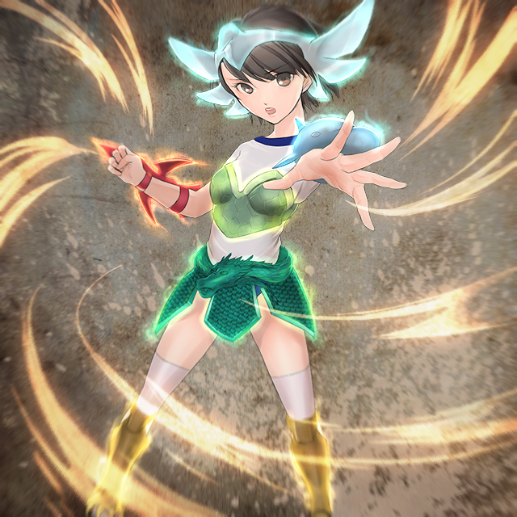

その「女」は深い眠りにあった。
気の遠くなるほどの遠い昔。
かつて自分を大賢者と呼んでいたその集団の先を憂いたあげく諍いとなり共倒れになったその存在。
地中深く埋められ、躯はとうに土に帰っていた。
だがもろい肉体は滅しても高潔な魂は不滅。
「彼女」がかつての同族のように現代人に取り付くにはより高度な条件が要求された。
なにしろ彼女は戦闘民族のその存在意義を否定したために同士に斬られる派目になったのだ。
欲望。破壊衝動でつながるのはたやすい。だが彼女は慈しみの心を条件としていた。
水は低きに流れる。彼女の志に一致する存在はなかなか現れず、未だに眠り続けていた。
かつてアマッドネスの大賢者と呼ばれた存在。その名はスズ。
戦乙女セーラ
ＥＰＩＳＯＤＥ３７「魔笛」
９月。二学期も始まり町に学生がまた溢れてきた。
清良。礼。順たちもそれぞれの学校で新学期を迎えていた。
夏休みの「合宿」の一件から三人は顔をあわせていない。
あの「仲たがい」で協力を仰ぐ気になれなかったのと、ひとりで何とかなるような相手が多かったためである。
一番数を残しているセーラだがライノセラスの一件で完全に福真署の特捜班を味方につけ、そのバックアップもあり順調に敵の数を減らしていた。
経験が積み重なり戦いになれてきたセーラと、やっとヨリシロを見つけて取り付いたばかりのアマッドネスでは話にならない。
もし今ここで初陣の相手であるスパイダーアマッドネスと戦ったら汗もかかずに倒すだろう。
ちなみに男を見下していた渡会のり子はとりつかれるという大失態を演じたこと。
そこをセーラに助けられたこと。
そしてアマッドネスと分離した際に傲慢な部分が吹き飛ばされたのが重なり、清良に対して友好的な態度をしてくるようになっていた。
男全体に対する偏見は元からあったらしく消えてはいないが、尊敬できるに値する相手なら男でも敬意を払うようになった。
ましてや清良は女に変身する。単純に普通の男相手より接しやすかった。
それを聞かされた清良の心中はやたらに複雑であったが。
ジャンスやブレイザも先に目覚めた分だけ手馴れている。
そしてのり子の働きかけでそれぞれの所轄の特捜班に戦乙女の存在を知らされ、全面バックアップとまでは行かなくても影ながらサポートくらいはされていた。
一般人を避難させ巻き添えの心配なく戦えるように。さらにはアマッドネスそのものを無人のエリアに誘導したりして戦いやすくしていた。
こちらもそれで多忙であった。なにしろ定期的に行っていた情報交換会も中断している始末。
それもあり三人はしばらく顔をあわせていなかった。
それぞれの学園生活が始まればなおさら疎遠になりそうである。
だがそれは一本の電話でさえぎられた。
休み時間にかかってきた電話。発信相手は一城薫子。
内容は埼玉の山中に怪しい老人がいると。
それは警視庁によりアマッドネスの可能性が高いと目される「Ｂグループ」の一人だった。
Ｂグループ。それは実際にアマッドネスと言う物証も目撃もないものの、状況から見てその可能性が高い人物たちの仮称だった。
もちろんＢに対するＡは怪人として暴れた面々である。
そしてかねてよりその風貌から目に付いていたＢ−７号。
人間としてはプロフェッサー。アマッドネスとしてはギルと呼ばれる存在の目撃例が寄せられていたので連絡があった。
接触している軽部は巧みに変装していたためＢ−５号とはいわれているが軽部とはばれていない。
今まで都内限定で犯行を重ねてきた奴らがなぜか埼玉に。
これは確かめるくらいは必要であろうとの判断である。
屈強な二人の男を従えて「プロフェッサー」は山を昇っていた。
山といってもハイキングに適しているような低いものだ。
しかしローブ姿の老人とスーツ姿のＳＰと思しき男二人は山には異様であった。
「……ここか」
しゃがれた声で不気味な老人はつぶやく。どこか感慨深げである。
「はっ」
左耳にピアスをしたサングラスの黒服が答える。
「ギル様たちのなきがらもこの山に」
「そうだったな。そしてあの忌々しい大賢者もここに埋まっているというな」
老人はひどく苦々しい表情をして吐き捨てるようにいう。
無理もない。かつての自分を斬った相手だ。いわば自分自身の仇。友好的になど出来るはずもない。
「構わん。深く埋まっているならあの裏切り者に我が魔笛が届くとも思えんがな」
ギルが死んでから「大賢者」は「将軍」と相打ちになったのは聞かされている。
当時はミュスアシを侵攻するのを優先したため六武衆の「葬式」は１メートル程度の穴に埋められただけだ。
これは蘇らせる前に野犬などに食われないための『保管』の意味で。
だがその前にクイーンが封じられたので死体は既に土になっている。
裏切り者であるスズはそんな処置をとるつもりもなく、とにかく深く掘って埋められた。
万が一にも蘇生しないようにと言う意味でだ。
彼は興味を失い、改めて場所を丹念に探す。
「ここだな」
雑草すらない不毛の土地。不法投棄された廃棄家電の山。冷蔵庫。洗濯機。家電ではないがまだ走れそうなバイクまである。
まるで墓標のようにごみの山がそびえている。ここはミュスアシ侵攻の前の戦で倒れた下級のアマッドネスたちを生めた場所。
六武衆同様に後に蘇生させる目的で死体を野生動物に食われないように埋めていた。
結局はそれが埋葬という形になった。
「ふふふふ。喜べ。お前ら役立たずどもがやっとクイーンのお役に立てるというわけだ」
二人の大男にではない。「土」に向かっていっている。
老人は横笛を取り出して口に運ぶ。そして奇怪なメロディを奏でる。
そのころ、遠く離れた位置では清良が友紀を後ろに乗せて。
礼がサイドカーのカーゴに森本を乗せて。
ウォーレン・バイクモードを岡元が駆りジャンスが後ろにしがみついて急行していた。
それぞれ所轄の迎えが行くといわれていたが待ってられず。
放課後になるやいなや使い魔たちの変化したビークルで向かっていた。
清良の場合いくら簡単な調査といえど友紀を置いていきたかったが、本人がどうしても同行すると聞かない。
未だに罪の意識が消えていない。そう思った清良は簡単な調査だし薫子もいる。
気の済むようにさせようと同行を許可したのだ。
問題の山が見えてきた。キャロルが走りながら薫子と連絡をとる。そして進路を定める。
同様にしてきたのであろう。ウォーレンの転じたバイクとドーベルの転じたサイドカーが合流して来た。
合流地点はふもとの駐車場。まだ暑いがドライバーは外で待っていた。
長袖のシャツとパンツルック。山と言うこともありスニーカー。女刑事だった。
「薫子さん。こんなにいらねーんじゃないの？」
停車して降りるなり一言いう清良。
確かに単なる調査に戦乙女三人は多い。
「うん。でもなんだかＢ−７号はお供を連れているらしいのよ」
「爺さんのお供なら助さんと格さんだろ」
国民的時代劇に引っ掛けた清良のジョークだが本心のはずがない。
本当にＢ−７号がアマッドネスとしたらその同行者もその危険性が高い。
そうなると確かに一人では手に追えない。
市街地なら警察の機能も十分に発揮できる。
だがいくら小さくても山は山だ。街中同様のバックアップは期待できない。
こうなるとこちらも三人いたほうがいいという薫子の判断だ。
「確かにな。こんなバカが一緒ではいつぞやのプールのように足を引っ張られるだけだ」
「ああ？ てめぇこそ手も足も出てなかったろうよ」
いきなり突っかかる礼。そしてきっちり反応する清良。
冷却期間がまるで役に立ってない。
「二人ともお久しぶりぃ。元気だったぁ？」
ほとんど女の子であるジャンスは気遣いが出来る。険悪な雰囲気になりかけた両者をその笑顔でいさめた。
毒気を抜かれた２人だがそっぽを向く。握手という雰囲気ではない。
「もう。キヨシもけんか腰にならないの」
ちょっとだけ罪悪感を抱く以前の友紀に戻る。
これまた女の子ならではのムードの変え方。
「だってこの野郎が」
「それはこっちの台詞だ。それになんだ。このひどくむかつくメロディは？」
「ああ。それは同感だ。なんかやたらに暴れたくなる」
心なしか清良と礼の目つきも凶悪な感じにとがっていく。
「ハイハイ。それじゃみんな行くわよ」
強制的に薫子がそれを流す。２人の仲の悪さを修復するのはまだ時間がいる。その場はそう思った。
「ああ。その前に森本君と友紀ちゃん。あなた達は危なくなったら逃げて。他の人を逃がしたり県警相手の連絡を頼むわよ」
岡元。森本。そして友紀がそれぞれの相手と強い絆で結ばれているのはわかっている。
さすがにアマッドネスには及ばないまでも十分超人の範疇にはいる岡元。
礼。そしてブレイザの精神的支えになっている森本の同行は仕方ないと思った。
しかし友紀だけは女子と言うこともあり残したかったが、一人だけ残すのも不安。
それに未だに清良に対しての罪の意識が残っているのも薫子は理解していた。
だからその「罪滅ぼし」の一環として同行を認めた。
同性ゆえに気持ちは理解できると言うことらしい。
上空にウォーレン。前方をドーベル。後方をキャロルが固める形で一同は歩いていく。
埼玉の山中。悪魔の儀式は続く。二人の護衛は「気配」を察した。
「ギル様。どうやらねずみが」
「われらが追い払ってまいります」
一心不乱に笛を吹き悪魔の儀式を進行しているギルは返答しない。
しかし腹心二人は心得ていた。
一方の戦乙女チーム。頭を押さえてひどく不機嫌にしている清良と礼。
「会長。頭痛ですか？」
「キヨシ。お薬ならあるよ」
女性ならではの常備薬。鎮痛剤を友紀が見せる。
「いや。そんなんじゃねぇんだよ」
これは清良の返答。
「なんかこの…いやな音がいらいらさせる」
「うむ。確かに辛気臭い笛の音がな」
「まるで呪術というイメージですよね」
そう言う岡元。そして森本だが彼らはけろっとしている。
「ジャンスさんはどうです？」
「あたしもとりあえず平気。二人とも変身したらいいんじゃ？」
なるほどと納得は出来る意見だが二人はそれどころではなかった。
とにかくいらいらして仕方がない。そしてむやみやたらに破壊衝動がつのる。
二人の目が合った。途端に火花が散る。あっという間に喧嘩になる。
「高岩ぁ。俺は前から貴様を斬りたくて仕方なかった。アマッドネスを壊滅させるまでは利用してやるつもりだったが今日はなんだか我慢できん」
「だったらいいぜ。殴りあいならつきあってやる。てめぇをぶんなぐりゃこの気分の悪さも吹っ飛びそうだ」
互いに言いがかりとしかいえないような言い草でののしりあう。
とうとう互いの胸倉をつかむにいたる。
「ああっ。会長。お気を確かに」
「清良もやめて」
「……割といつもと変わらない気がするけど」
空気を読めてないジャンスの一言。
そして二人はつかみあいの喧嘩を始める。
（私の眠りを妨げるのは誰だ……この笛の音は狂将か？）
深い眠りの魂が地上の騒がしさに目を覚ましかけている。
「見つけたぞ。戦乙女ども。このカーサと」
「ギラが貴様らを始末してくれる」
ギルについていた２人のボディガードが守りでなく攻めてきた。やたらに戦意が高い。
「はははは。われらが力を見せてくれる」
カーサと名乗ったほうがいうと２人は黒光りする姿へと転じた。
どうやら甲虫のようだが区別がつかない。同一タイプ？
漆黒の甲冑をまとった騎士。そんな印象。カーサと名乗ったほうは太い槍を。ギラと名乗ったほうは半月刀を両手にもっていた。
「ジャンスは我が槍でしとめる。いいな。ギラ」
「それならあちらの２人はわが双剣で殺す」
「あ。そー言うこと。槍のあなたがカブトムシで、二刀流のあなたがクワガタね。メスだから角やあごが小さくてわかり難かったのね」
相変わらず飄々としているジャンスの口調。
「余裕もそこまでだ」
「だがなぜ貴様は我が主の魔笛に心を乱されん？」
「どうやらこの笛。クイーンのかけらに働きかけるみたいだけど、あたしが一番その影響少ないのよね。おまけに普段からやりたい放題だから２人みたくストレスもないし」
ある一面でいうなら２人は女の姿を仕方なくとっているわけだが順というかジャンスは積極的にとっている。それだけでもストレスは違うだろう。
「そしてあなた達は逆にやる気満々になっているのね。なるほど。それで伊藤さんと高岩さんはあんな好戦的だったのね」
分析して見せるジャンス。にやりと笑うビートルアマッドネスとスタッグアマッドネス。
「そして変身すればそのクイーンのかけらは抑えられる。だからあたしは影響受けないわけね」
すべて見抜いていた。
「頭はいいようだな」
「ならば力ずくだ」
いうなりカーサことビートルアマッドネスは地面にやりを突き刺して掘り起こす。
「危ない」
そのまま 轟音をとどろかせて投げられた土の塊を自分が盾になって防ごうとする岡元だったが、さすがにそれは受け止めきれず背後の森本。友紀。薫子を自分の下敷きにしてしまう。
「きゃあっ」
塊自体は防いだが岡元の下敷きになったのもあり四人とも気絶する。
「はっ？ 俺たちは？」
「何をしていたんだ？」
瞬間的に正気にかえったもののまだ続く笛の音でまた狂気に犯される清良と礼。だが
「そうか！ ウォーレン」
ジャンスが機転を利かせた。ウォーレンを地面に下ろすとバイクへと変化させる。
そして思い切り爆音を。それが魔笛を無効化した。
「今よ。２人とも」
「お、おう」
再び正気に戻った二人はセーラとブレイザに変身する。
「くっ。３対２」
「やむをえん。引くぞ」
いきなり撤退する２怪人。深追いは厳禁というのがセオリーだがまだ魔笛の影響が残っていて戦意が高すぎる。
「キャロル」「ドーベル」
本来なら気を失った四人の護衛に使い魔をつけるはずの所を、自分たちの戦いの手伝いを優先させた。
使い魔達も心配ではあったが逆らえないし、諸悪の根源である魔笛を始末すればと思い従った。
戦乙女たちは２体を追ってこの場から消えた。
ビートルとスタッグを追っていた三人はギルの下にたどり着く。
「見つけたぞ。このやろう」
既に時間が経っているにもかかわらず男の意識のままのセーラ。
「貴様を斬れば済むと言うことだな」
ブレイザも伊藤礼としての意識のままだ。
（そうか。あたしたち戦乙女が男にばかり転生するのはこのかけらのせい。いわばかけらがあたしたちの男としての部分をつかさどっている。今はこの笛のせいで活性化しているから意識が切り替わらないのね）
もともと希薄で影響の少ないジャンスには状況がよく見えている。
「くくくく。既に変身しているか。それではさすがに魔笛の効果も薄いな」
言葉と裏腹に余裕のプロフェッサーことギル。
「ならばわれも姿を変えよう」
両手でローブを持ち上げて前方に一気に引き下げる。
そこには薄汚い老人ではなく虫の異形がいた。
大きな複眼。屹立する触覚。独特の口元。
「バッタ？ いや…違うな」
「キリギリスじゃないかしら？ それでもホッパーだけど」
「それじゃ飛田たちと紛らわしい」
「だったらローカストとでも呼べ」
既に変身して厄介な魔笛は封じたので余裕。それゆえの軽口だった。
「ふふふ。確かにわれはキリギリスの異形。そしてこの姿で奏でる魔笛は先ほどまでとは違うぞ」
ローカストアマッドネスは今度は自身の体から笛の音を繰り出した。
「ぐあっ」「きゃあっ。なにこれ」「心が…心が壊れる」
既に変身して無効化したはずがもっと強力な魔笛によって心が乱される。
反対にカーサとギラはますます戦意を高揚させる。
それが狂将たるゆえんだった。
「闇にうまれし者は闇に帰れ。闇にうまれし者は闇に帰れ」
暗黒へといざなっている。アマッドネスの本能ともいうべき破壊衝動が極限まで高められる。
「高岩ぁぁぁぁ」
「伊藤ぉぉぉぉ」
戦乙女のまま２人は戦闘を開始する。
かろうじてジャンスは正気を保っていたが今度は平静ではいられない。そこにカーサとギラが襲い掛かる。
気を失った４人。その一人に（力を貸そうか？）と「魂」が呼びかける。呼ばれたほうとしては夢の中。まともに思考できない。
（アマ……ッドネス？）
（かつてはな。だがあんな愚か者どもとは縁を切る）
その「女」が向き直る。現代風に言うならストレートロングの涼やかな美人だ。
（私に体を貸してくれ。君になら受け入れてもらえると思う）
（力に……？）
（約束する。大賢者の名にかけて）
（…ならこちらからも頼む……）
（ありがとう）
そしてひとつの肉体と二つの魂が一緒になった。
「ぐ……」
ジャンスはギラの双剣で挟まれていた。まさにクワガタムシ。
「やれ。カーサ」
タッグ専門なのかコンビネーションが抜群である。武功よりも敵の殲滅を優先。止めを譲っている。
「ああ。奴らの首はお前に譲るからな」
気絶して男の姿に戻った清良と礼。クロスカウンターになったのとこの魔的で疲弊していたためあっさりと気を失った。
使い魔達も巻き添えで戦闘不能に。
ジャンス絶体絶命。逃げようにも両腕ごとはさまれて脱出も攻撃も出来ない。
まさに槍がジャンスの心臓を射抜こうかというとき、フェンシングのサーベルの刀身ようなものがギラの胸に刺さる。
ひるんだ隙にジャンスは脱出に成功した。
「何者だ！？」
すべての戦乙女はここにいる。戦士はいないはずだ。
「ひさし振りだな。ギル。相変わらず下手な笛だ。おちおち寝てもいられない」
その「女」は余裕の態度でいう。
「ま、まさか。われはお前まで蘇らせたと言うのか。その顔」
ひどく狼狽している。
「ああ。協力してくれた相手が狙われてはかなわないからね。魔力で自分の顔にさせてもらった」
すっきりとした美人。黒髪をうなじで束ねている。衣装は現代風にライダースーツだ。
彼女は左手をわきにひきつけ、その手首に右手の手首を合わせる。
そのまま反対側に運び、さらに中央に寄せて前方に突き出す。
上を向いていた右手の甲を下に。反対に下を向いていた左手の甲が上に。
その瞬間にメタモルフォーゼが始まる。
顔の上半分を覆う仮面のような物。黄色をベースに黒いラインが走る。
黒い複眼。二本のアンテナ。しかし口だけは露出している。赤い唇が成人女性を思わせる。
胸元にもプロテクター。背中には翅の名残か二枚の白いマフラー。
右手にもったサーベルを高々と掲げると顔の高さに引き下げ横へとなぎ払い名乗りをあげる。
「我が名はスズ。かつては大賢者と呼ばれたもの。そして今はアマッドネスを阻むもの」
このイラストはＯＭＣによって作成されました。
クリエイターのていくあうとさんに感謝！！
「いよいよ狂将さまが出陣かい？」
セーラたちが苦戦するさなかと同じころの都内。警視庁からさほど離れてない場所の路上。
まるで女性のような美貌の男が猟犬のような目をした男に軽い口調で尋ねる。
「こんなところで話しかけるな。そうでなくても最近はお前とギルはマークされている」
死将・アヌの憑いた軽部が麗将・ライと交じり合った秋野をとがめる。
「情報屋と言うことにでもしておいてくれよ」
「ふん。詐欺師だけに口は達者だな」
この発言は軽部ではない。まだ暑いのに皮ジャンを着た男が二人に話しかけた。
もっともブーツにバイクグローブ。オートバイに乗るのであればこの装備ももっともである。
レイバンのサングラスで目元はわからないがニヤニヤとしているのは判る。
大柄である。リーゼントがよく似合っていた。
「容疑はかかっても逮捕はされてないよ。それで、何か知っているのかい？ イグレ」
「中屋敷純郎だろ。この姿の時は」
「ふっ。はぐれ者の名前なんてどうでもいいか」
気取り屋の秋野がはき捨てるようにいう。
「そのはぐれものを六人がかりで。しかも闇討ちしたくせにな」
中屋敷は挑発するように言う。いつもは飄々とした秋野も険しい表情に。
「また消してやろうか？ サザもルコもスストもヨリシロと分離してしまったがもっと相性のいい相手を見つけさえすればすぐに復活してくる。そうしたらお前なんか」
「なんだ？ 知らないのか？ 奴らの魂がどうなったか」
「よせ。イグレ」
路上というのにアマッドネスとしての名前を口走る軽部。それほど拙いことを言おうとしている。
戦乙女セーラ
ＥＰＩＳＯＤＥ３８「賢者」
埼玉の山中。青ざめるギル。
「バカな？ はるかに深く埋めたはず。例えこの笛の音が届いても蘇られるはずが…そもそも貴様の魂と合致するヨリシロがこの腐れきった世の中にいるはずがない」
「あまり人間を見くびらないことだ。邪心に満ちたものばかりでもない」
「人にそんな存在が……人？」
突然ギルが哄笑する。
「ふはははは。スズ？ スズだと？ その姿のどこがだ。その惨めな姿はどうだ。まさに人間のようではないか。栄光あるアマッドネスの大賢者とまで言われた貴様が惨めなものよ」
おかしくてたまらない。それとは違う。無理に笑って不安を吹き飛ばそうというのが本音。
何しろかつては六人がかりで立ち向かって疲弊させただけ。手傷すら負わせていないのだ。そして自らは斬り捨てられている。苦手意識もある。
だから相手は完全ではないと思い込むことで精神の平穏を保とうとしていた。
それに対してスズは極めて落ち着いている。大賢者とまで呼ばれた者の風格は伊達ではない。
「そうだな。胸から下は人のままだ。翅もない。顔すらこんな仮面のようだ」
綺麗だが大人びた低い声で冷静にいうスズ。
「だがこれでいい。私は貴様らのような『化け物』の姿はもうとらん。人として戦うから人に近い姿になったのだ」
「戯言を。大方は不完全な覚醒。融合だったのだろう。だからそんな中途半端。違うか？」
ギルのいう通りでもあった。スズの言葉はそれをごまかす「はったり」の側面もあった。
ただし彼女の言うこともまた真実。
「ふん。それよりも驚いたな。一度死んでもこれだけの愚行を繰り返すとは」
「蘇ったばかりでなぜわかる？」
ここは冷静だったギル。
「そうか。そのヨリシロ。誰かは知らぬがわれらとかかわりがあるか」
「私が誰であろうと関係ない。問題なのは貴様らの過ちだ」
「ならばとめるか？ 貴様の嫌う戦いで」
暴力を暴力でとめる。大いなる矛盾。しかし
「既にこの拳は血塗られている。貴様らに向けるのにはためらう道理なし」
戦意を形に示すべく剣先をギルに向ける。
「ふん。どちらにせよ人の部分が大きいならかつてほどの強さはない。あの翅を見ろ」
スズの脅威はその飛翔能力にもあった。何しろ高速飛行をするルコでさえ敗れたほどだ。
しかし今は肝心の翅がない。飛べないスズになら勝てるとギルは思った。
「やれ。まずは奴から倒せ」
指示を受けてビートルとスタッグが襲い掛かる。
ギルの切り札である魔笛だがスズもまた一応はアマッドネス。
つまりギラとカーサだけでなくスズの戦闘意欲まで高揚させてしまうので使えない。
もしもセーラとブレイザが無事なら笛で暴走させて混乱に乗じる手もあったが気を失っている。
よりによって自身の魔笛がその状態に追い込んでいた。
結局は２人の守護者に頼らざるを得ない。
都内。青ざめている秋野。衝撃的な事実を告げた中屋敷はニヤニヤしている。
「そ、そんなバカな。奴らはもう…」
「ああ。クイーンに『食われて』いるはずさ」
アマッドネスの異形に転じる力はクイーンから与えられた魔力によるものである。
そして女王自身は戦乙女に受けたダメージゆえ完全復活には程遠い。だから力を取り戻そうとしていた。
「嘘だろ。アヌ。こいつの嫌がらせだろ」
いつもの余裕がかけらもない秋野。それに対して軽部は首を横に振る。
「今まで倒されたアマッドネスに与えていた魔力を取り込むことでだいぶクイーンは復調してきている。だがまだ足りない。だからギルはまだ埋もれている魂を掘り起こしに出向いた」
彼はそこまでいうと遠くへと視線を送る。その方角にはとある病院が。
「そ、それじゃスストたちは？」
まったく余裕のなくなった秋野。
「ああ。今度こそ完全にくたばっている。ま、一度死んでいるんだ。ちょっとでも生き帰れていいじゃねぇか」
これは中屋敷ことイグレの言葉。
「お前も気をつけるんだな。今度死んだらもうだめだぜ」
その言葉で仮に死んでも別の肉体に取り付けばいいと気軽に考えていた秋野…ライは蒼白になる。
「そんなことを言いに来たのか？」
既にその覚悟は出来ていた軽部ことアヌは騒がない。
「そうだな。本題にはいるか」
真正面から軽部を見据える。
「俺を使えよ。１０８の魔星も残りわずかだ。ギルが掘り起こしているのはそれに入れず捨て置かれたくずども。そんな奴らでは戦力になるまい」
図星だった。１０８と言うのはあくまでミュスアシを実際に攻めた敵兵の数。
実際にはその前に倒れていた者たちもいる。合計で２００を上回る。
だが大多数は単純な物理攻撃で倒される程度の「人間より多少はまし」と言う程度の異形だった。
はっきり言えば女王が復活のために取り込む目的でギルは下級戦士の墓を暴きに出向いた。
とある病院。人として眠る女王。その顔色が見る見るうちによくなっていく。
彼女は意識しないままにまるで植物の根が水を吸い上げるように下級戦士の魔力を取り込んでいた。
中屋敷がやっと本題に入る。
「そろそろ手を打たないか？ 闇討ちは水に流してやるからさ」
上へのし上がろうというシンプルな願いだった。
「断る。お前のような危険な奴。われら六武衆の一員に出来るか」
下手したらガラ。そしてクイーンにすら手を出しかねない。
だから六武衆総出で闇討ちで葬った。
「六？ 三人だろうが」
「一人でも十分だ。ガラ様には私一人がいればいい。私にとってもガラ様がすべてだ」
忠誠心は女王より将軍に向けられていた。
「おーお。相変わらずお熱いことで」
再びからかうようにいう。あろうことか頬を染める「アヌ」そして「軽部」
（そうだ。誰も私とガラ様の間には入り込めない。例えクイーンであっても）
確かに忠心というよりは「恋している」ような表情だった。
そのとき中屋敷の携帯電話が鳴った。
「ちっ」
彼は舌打ちしてそれをとり通話。終わらせて
「話は後だ。表稼業でお呼びだからな」
「ああ。そういや一斉捜査だったな」
「そう言うこった」
中屋敷はふざけて警察手帳を出して見せる。
軽部や三田村同様の警察官が今の社会的身分だ。
中屋敷が去っても秋野は青ざめたままだった。
スズメバチの異形だからかまさに「蝶のように舞い蜂のように刺す」という戦い方だ。
カーサの槍もギラの刀も獲物を捕らえられずにむなしく空を切り裂く。
しかしスズの方も決定打がない。二体相手にかわすのが精一杯に見える。
（ならば）
スズはカーサの槍を巧みにさばきながら背中をギラに向ける。
（がら空きだ）
ギラは二本の刀をはさみのように交錯させる。クワガタのあごのように挟み込む目的だ。
固定したところをカーサの槍が貫く。だが事はそれほど単純でもない。
（くくく。寸前で身をかわして私の槍でギラを貫かせ）
（あわよくばこの剣でカーサを斬りつけさせ同士討ちを狙っているのだろう。だが）
コンビネーションは抜群。その手の状況の想定は出来ている。
最初からその交錯した刀を狙って貫く。
万が一かわされてもパートナーを刺し貫くことはない。だからためらわずに槍を突いた。
そして予測どおりスズはかわした。
右か左ならそのままギラの刀のどちらかが斬りつける。それ以外ならそのままカーサの槍が再び襲い掛かる。
逆手にとったはずだった。
なんとスズはその槍の柄に飛び乗った。恐るべき身軽さ。
「飛べないなら跳ぶまで」
皮肉にもギラの双剣がカーサの槍を支えているので安定している。
そして槍で押さえられて「はさみ」を解除できない。
「こ、こいつ！？」
そのままスズはカーサの方へと駆けよる。
そしてカーサが槍を手放す前に顔面にひざを追いきり打ちつけ鼻の骨を砕く。
「ぐあっ」
これはいくらなんでもたまらずひるむ。そこへ追い討ちでスズの剣が腹部を十字に切り裂く。
甲は頑強でも腹部は違う。戦闘不能に。
「カーサ」
ギラが援護しようにもその獲物では届かない。その目前でカーサに弾丸が雨あられと浴びせられる。
「なに？」
スズにばかり気をとられていた。ギルが弾丸の出所を見るとジャンスが復帰していた。
いつの間にか超変身までしてロリータフォームで乱射していた。
「ぐおおおおおっ」
断末魔の叫びをあげてカブトムシの異形が爆裂する。
「お、おのれ。よくもカーサを」
相棒を失い激昂するクワガタムシの異形。だが時間経過で復活したのはジャンスだけではない。
「「変身！」」
失念していた。これまたいつの間にか気絶から目覚めた清良と礼が変身。
即座にキャストオフ。そしてブレイザはスタッグアマッドネスに。
セーラは「ホーネットアマッドネス」に突進する。
「セーラさん。そっちは違う！」
事情を知るジャンスが制止する。
「なにがだよ？ アマッドネスじゃねぇか」
目が覚めたら異形が増えていた。そういう認識である。
さらに言うならギルの魔笛の影響が両者共に残っていた。だからこんな不意打ちに近い戦い方だ。
そのギルだがビートルアマッドネスのカーサが倒された事で不利を悟る。
（くっ。この姿で魔笛を奏でるのは隙を作るだけだ。ジャンスがフリーだからな。ならば間合いをとるまで）
遠方から魔笛による攻撃を試みるべくギルは早々に逃げ出した。
「あっ。こら」
セーラと違いロリータフォームやアリスフォームを長時間維持出来ないジャンスはヴァルキリアフォームになっていた。
あわてて二丁拳銃を撃つがまんまと逃げられた。
「だああああっ」
ブレイザ・ガイアフォームが力任せに斬馬刀を振り下ろす。
攻防一体の双剣で受け止めようとしたギラだが過信だったようだ。
剣もろとも唐竹割りに真っ二つ。直後に爆発した。
残るはセーラとスズの戦い。
セーラは拳を見舞ったと思ったら足技。場合によっては背後をとって投げ技まで試みようとしている。
それを軽やかにかわし続けるスズ。しかし足止めを受けてしまいギルの逃亡を許してしまった。
「よせ。ギルが逃げてしまうぞ」
「なにを寝言を。貴様もアマッドネスだろうが」
過剰に引き上げられた闘争本能で聞く耳を持たないセーラ。
すさまじい数の拳を繰り出す。
それを見事に捌ききるスズ。受け流すと言う感じである。
「この」
だがギルの笛の音が途絶えてだんだんに精神の女性化が始まっていた。
そうなると冷静さが戻ってくる。
（あれ？ こいつ…そんなに化け物じみてない？）
化け物どもにしてはフォルムがやたら人間的と気がつく。
間合いをとりつつ視線でけん制。しかし攻撃はやめて問いただす。
「あなたは人間なの？ それともアマッドネス？」
「その答えは後だ。奴に逃げきられたら厄介だ」
既にだいぶ距離をとられた。スズは走り出した。セーラが後を追うが意外に速くて追いつけない。
スズの目指したのは不法投棄されたごみの山。
その中のぼろぼろのバイクが目的だ。右のハンドルが折れたのかなくなっている有様。
「おまえも私と同じでうち捨てられていたのか？」
優しい口調で語る。
「ならば私と共にこい。鉄の馬よ。私の足となれ」
スズはそのレイピアを右ハンドルの位置に差し込む。
セーラが伸縮警棒をマーメイドランスに変えるのと同様にそのオフロードバイクが蘇る。
スズの体色と反対に黒地に黄色いラインが走る。
「まるで稲妻だな。よし。闇を破るもの…ダークブレイカーがお前の名だ」
ひらりとまたがるとギルを追跡し始めた。
直接戦闘に長けていないギルはほうほうのていで逃げ出していた。
（なんと言う失態だ。任務をしくじったばかりか敵を一人増やすとは。このままでは役立たずとしてわし自身が食われる）
ギルは立ち止まり呼吸を整える。
（失態を補うにはなんとしてでもここでスズだけでも始末せねば。今なら戦乙女どもとスズだけ。奴ら同士で戦わせる）
ギルは魔笛を奏でるべく構える。それが命取りであった。
「まちなさいよぉぉぉっ」
キャロルが戦闘不能のためセーラはフェアリーフォームで飛んで追いかけていた。
しかし山の中ゆえ木の枝が邪魔で思うように飛べない。
スズの方は道を行くのでそう言う障害はない。
ならばと低い位置を飛びたいところだが、自身が作り出す空気の衝撃波を受けてしまうためその手も有効ではない。
結局はついていくのが精一杯だった。
ついていくのが精一杯なのはスズの卓越したライディング技術も要因のひとつ。
（なんてバイクテクニックなのかしら。ヨリシロはバイクの心得がある？）
以前に戦ったホッパーアマッドネスのケースを思い出す。
ただスズはバイクが上手いと言うよりバランス感覚が鋭いと言うべきであるが。
そして両者はついにローカストアマッドネスに追いついた。
「ば、バカな。そんな事まで！？」
バイクの事をさしている。完全に予想外の早さで追いつかれた。
「観念して地獄に帰れ。貴様自身が言っていたのだ。闇に帰れと」
敵対しているからか男言葉のきつい調子でしゃべる大賢者。ひらりとバイクから飛び降りてギルに向かい合う。
「おのれ」
幸いにもセーラがついてきていた。それを暴走させて争わせてまた逃げようと魔笛を奏でようとする。
「無駄だ。もうその手は利かない」
ダークブレイカーの排気音でかき消される。
「ううっ」
ギルが狼狽した隙にスズはバイクからレイピアを引き抜き、そのまま斬りつける。
「ぎゃあああっ」
そこは怪人の姿のときに魔笛を奏でる器官。勝負あった。
「わ、私は生きていたい。このヘイワードの持つ知識を吸収したい。それだけだ。もう人間を襲わない。見逃してくれ。スズ」
恥も外聞もなく命乞いを始めた。
「貴様も私もこの時代に生きていていい存在ではない。あるべき所に帰れ」
スズはかがむと右足の脛にレイピアをくくりつける。
「はっ」
短い気合と共に彼女は跳んだ。空中で一回転。翅だったマフラーが躍動感をかもし出す。
「ホーネットスティンガー」
高い位置からスピンしながらのキックがギルめがけて繰り出される。
命中したそれはギルの腹を引き裂いた。
「ぎゃああああっっっっ」
レイピアの先端がまさにドリルのようにうがつ。
（え、えげつない）
非情な戦いにあろうことかアマッドネス怪人に同情してしまうセーラ。
むしろスズの容赦のなさに反感を抱いたと言うべきか。
「セーラ。最後は君だ。早くしないとヨリシロが死んでしまうぞ」
「あ、あたしに命令しないでよ」
「アマッドネス」に命令されてはたまらない。しかし実際に「虫の息」の相手がいる。
こちらを優先せざるを得ない。
セーラは左手のチョップを見舞う。凍てつくローカストアマッドネス。
「せーのっ」
低空から太陽めがけての炎のアッパー。
十字に切り裂いた部分から炎が噴出し、キリギリスの化け物は爆発した。
狂将・ギル。戦死。六武衆の残りは死将・アヌと麗将・ライのみ。
「セーラさーん」
ジャンスの声が聞こえてきた。ブレイザともども走ってきた。
「敵は？」
「倒したわ」
セーラの指し示す方角には老婆が。ヨリシロのヘイワードが既に高齢だったため女性化しても美人とは行かなかった。
「終わったな」
バイクにまたがるスズ。
「まって。聞かせて。本当にあなたは何者なの？」
真摯に見つめるセーラ。仮面越しに受け止めるスズ。
「四人目。第四の戦乙女ではだめか？」
スズは軽口をたたく。
「えっ？ 四号？ アナザーヴァルキリア？」
食いつくジャンス。
「もうちょっとひねりなさいよ。勝利への力と言うならＶｉｃｔｏｒｙ Ｆｏｒｃｅで」
「もう少し頭をお使いなさいな。四人目の戦乙女ならＶａｌｋｉｌｉａ ４ｔｈで」
「「Ｖフォース」」
綺麗にセーラとブレイザの声がハモる。顔を見合わせる２人。そして
「なにそれ？ 信じられない。だっさいセンス」
「お黙りなさい。セーラさんこそ人のことはいえないのではありませんこと？」
また喧嘩だがギルの笛の音によるものと違いじゃれあいのようなものだ。
「私はスズだ。それだけの存在。そして敵の敵は味方と言うことだ」
確かにギルはスズを敵視していた。この言葉は信憑性があるなと三人は思う。
「でも信じられないわ。あたしたちを信用させる芝居じゃない？」
セーラの言葉はもっともである。しかし仮面越しに哀しげな表情が見えるスズ。
「君たちがどう思おうとかまわない。だが私は君たちの味方だ」
それだけ言うとエンジンをふかす。
「また逢おうう」
まさに風のように消えていった。
呆然と残された戦乙女たち。
徒歩で仲間たちの元へと戻ろうとしている戦乙女たちは、スズの正体について話をしていた。
「何者だったのでしょうか？」
「アマッドネスの内部分裂かな？」
「とりあえず信用するのはまだ早いわ。味方なんていっていたけど」
（（（味方？）））
三人とも恐ろしい考えが浮かぶ。
（そう言えばお姉さま。正義のアマッドネスになら体を貸してもいいと）
（あの強さ。番長がヨリシロなら納得だわ）
（まさか森本が私を案ずるあまりあのアマッドネスの言葉に乗ったのでは？）
既に一度憑かれていた友紀は除外されていたものの、きわめて身近な人物が謎の女戦士になった可能性を思うと勝利を喜ぶ気分ではなくなっていた三人だった。
そして都内では
（やってやる。食われる前にこちらが逆に取り込んでやる。そのためには魔力を吸収して強化せねば）
ライが保身のため裏切りを決意していた。そして標的は？
とある女子高の放課後。
帰宅する生徒や部活動にいそしむ生徒でまだ活気がある。
そこにその「男」は現れた。
「ちょっと？ 誰あれ？」
不審な男に対してもっともな反応を示す乙女たち。
「でもかっこいいかも」
その「不審者」は端正な顔をしていた。
「やぁ。君たち。ちょっと頼まれてくれないかな？」
美青年はとろけるような笑顔で甘い声を出す。
「は、はい。何でしょう？」
その「王子様」ムードに酔わされた少女たちはあっさりと警戒心をなくす。
「メッセンジャーになって欲しいのさ。戦乙女たちに対してのね」
「ハイ？」
女子高生たちにとっては意味不明の一言を発すると美青年…秋野光平は異形へと転じる。
原色で彩られたサイケデリックな体色が毒々しい。
髪型がマッシュルームカットと言うのはしゃれにもなっていない。
その上にベレー帽のように「きのこの傘」が。
秋野…トードスツールアマッドネスがその正体を現すと、少女たちはアイドルに向けるのとは違う悲鳴をあげた。
「これはご褒美の前払い」
頭部の傘から発生した毒胞子を伊吹に乗せて少女たちに吹き付ける。まるで「投げキッス」のようだ。
「きゃあっ」「ひゃっ」
毒を吹き付けられて悶絶していた少女たちだが意思の光を失い暴れだした。
「あはははは。いいだろ。受験とか悩みを忘れられてさ」
芝居じみた口調で台詞のように言うトードスツール。
（この騒ぎを聞きつけて早く来い。戦乙女ども）
戦乙女セーラ
ＥＰＩＳＯＤＥ３９「喪失」
そのころ、清良。礼。順の三人は福真署の応接室で情報交換会をしていた。
警察の協力を取り付けられたこともあり、そして学生を巻き込まないようにとここで情報交換をするようになっていた。
それはもちろん警察に対して情報を流す目的もある。
「薫子さんは？」
「カオルは…一城刑事は別件で今日はこれないわ。代わりに私が参加するわ」
口調が柔らかくなっているがこれは渡会のり子警部補。
ライノセラスに取り付かれた一件で浄化の際にこうなった。
「ああ。いいけどさ」
あまりの豹変に戸惑う清良。気のせいか化粧も身だしなみ程度からもう少し華やかなものになった。
女性である。むしろ私服での捜査ならそのくらいの方が自然。
（変われば変わるもんだな）
この言葉がまさか自分自身に降りかかるとは思いもしてなかった清良である。
「それでは早速ですが」
やましいことはなくても警察署は居心地が悪い。手早く済まそうと順が切り出したが署内に放送がある。
『……女子高等学校でアマッドネス出現。対策班は至急急行せよ。繰り返す。』
「女子高？ 奴らいつもなら男を狙うのに？」
「話は片付けてからにしようぜ」
やはり居心地の悪い清良が飛び出していく。
「三人とも。パトカーで行くわよ」
順。礼は地元ではない。地元の清良とてこの学校には縁がない。
まとめて運んでもらえるなら助かるのでその提案に乗った。
警視庁。歯噛みしている軽部。
（どういうつもりだ？ ライ。裏切るのか？）
アヌもガラも指示など出していない。独断だ。
抑えにすぐさま出向きたかったが対策班が出ている以上はいきなり本庁の面々が出向いては不自然。
ゆえに応援要請が入るまでは動けなかった。
「そこまでよ。アマッドネス」
パトカーから降りてきた三人の戦乙女。
車での移動は変身場所を確保できるメリットもあった。
とりあえず敵の系統がわからないのもあり防御形態のエンジェルフォームの三人。制服姿の戦乙女たち。
それだけ見ていると女子高生がパトカーで送られてきたようだ。
「来たね。お姫様たち」
芝居を続けているトードスツール。
「白昼堂々とはいい度胸ですわ」
早いうちに変身したらしくブレイザとしての口調だ。
「この方が都合がよくてね」
あくまでも優雅に振舞うライ。だがそれはむしろ「あせり」を隠すもの。
「あんたの都合なんか知らないわよ」
気がついてないのかたけるセーラ。
戦乙女たちは攻撃を仕掛けたかったものの周辺に奴隷女たちがいるので様子を見ている。
攻撃してこないのを見越して「芝居」を続けるライ。
「自己紹介をさせてもらおう。僕はアマッドネス六武衆の一人。麗将。ライ」
どこか挑発ともとれるしぐさだ。
「六武衆の残り二人の一人が出てきたわけね」
過去の強敵を思い出して身構える。
「それにしても『僕』？ まだ男の人格が残っているのかしら？」
「いいや。聞いているだろ。アマッドネスは女だけの組織と。そして女同士でいい仲になるものもいると」
「すると」
怖い考えになる本来は男なのに今は少女のセーラとブレイザ。
ジャンスだけはなぜか目を輝かせている。どうやら順の時は「オタク少年」だがジャンスになると「腐女子」のようだ。
「そう。僕はずっと男役。いつしか女の子しか愛せなくなっていてね」
「へ……変態」
「人の事が言えるのかい？ 体は女で心は男なんて君たちが」
「うっ」
確かに今は男とは言えない。しかし完全に女かと言うと心のどこかに男の部分が残っている。
「それを僕が治してあげるよ」
言うなりライは毒胞子を飛ばす。
「危ない」
セーラは瞬時にキャストオフ。そして超変身してフェアリーフォームに。
リボンを振り渦を巻き空気の壁でブロックした。
「お行きなさい」
ブレイザの一言でパトカーは去った。足手まといにしかならないと察したのだ。
「ちょっと厄介ですね」
弓でけん制しながらジャンスがつぶやく。
下手に爆発させると毒胞子が爆散しかねない。それで射撃をためらっている。
火薬を爆発させての爆発ではないのだ。燃え尽きる可能性は低い。
さらに言うなら奴隷と化した女子高生たちがたむろしている。
射撃は弾丸がすり抜けるから問題なくても爆発は拙い。
不思議な事にたむろしているだけで攻撃を仕掛けてこない奴隷娘たち。
まるで異形を守っているかのようだ。
「だったら奴だけグラウンドに連れ込むわ」
土のグラウンドならスプリンクラーがあるのを期待出来る。それで胞子を叩き落す。
なかったとしても広い所でなら被害をとどめることが出来る。
飛んだセーラは一気に奴隷娘たちを飛び越えてトードスツールに接近し抱え込もうとしたその瞬間だ。
毒キノコの異形は美青年の姿に戻る。
「えっ？」
戸惑うセーラ。どうして戦闘形態解除なの？
その躊躇いが隙を生んだ。抱え込もうと密着を試みたのがセーラの不運。
「君もどうせなら男相手の方がいいだろう」
いうなり秋野はセーラのあごに右手をかける。左腕をセーラの背中に回すとまさに電光石火の早業で唇を奪う。
「！？」
セーラは大きく目を見開いて驚いている。せめてもの救いは精神が女性化していた事。
男の精神のまま男にキスされたらその屈辱は計り知れない。
「な゛っ？」
あまりに予想外の出来事に面食らうブレイザ。女性の精神のためか赤面している。
「ず、ずるいっ。セーラさん」
思わず本音が出たジャンス。色ボケと言うより女として扱われてと言う意味である。
「むーっむむーっ」
当の本人はそれどころではない。男に唇を奪われもがいている。窒息寸前だ。
秋野は文字通り「唇を吸っている」。何かがセーラの体内から搾り取られている。
やがてセーラはおとなしくなった。ぐったりとして崩れ落ちる。その姿がセーラー服姿に戻る。
「ふふ。ごちそうさま」
口をぬぐいながら笑みを浮かべる秋野。
「な、なんて破廉恥な」
「そうよっ。するならあたしにしてくれたらよかったのにっ」
「……ジャンスさん？」
「……すいません。つい」
赤くなってうつむくジャンス。完全に調子が狂っている。攻撃のタイミングがつかめない。
「ふぅ。さすがにお腹一杯だ。今日はここまで。次はブレイザかジャンス。君たちのどちらをもらうよ」
異形に転じると毒胞子の煙幕に隠れて逃げた。支配を逃れた女子高生たちが気絶する。
「あいつ……なにがしたかったんですの？」
「セーラさん。起きて。起きてください。キスの感想を聞かせてくださいよ」
「先を越された」悔しさで場違いな事を口走っているジャンス。
「いい加減にたぬき寝入りはやめてはいかがです？ セーラさん」
戦乙女たちの変身は意識が途絶えるとリセットされる。
少女の姿を保っていると言うことは気を失っていないと判断しての発言である。
だがセーラは目覚めない。呼吸はしているから死んだわけではない。
すると眠っているわけだが元に戻らないのは？
「おかしいですわね？ 調べましょうか。ドーベル」
同行していた黒犬の従者を呼び寄せる。
「セーラ様。失礼いたします」
一言断るとその鼻でかぎ回る。
「ドーベル。私もやるわ」
セーラの使い魔。キャロルも何かを嗅ぎ取ろうとしている。だが見つからない。
狼狽しているキャロル。それに対し元々の性格で冷静に対処出来ているドーベルが報告する。
「セーラ様にはクイーンのかけらがほとんどありません。だから男の姿になれないのだと思われます」
「つまり奴の目的はあたしたちのクイーンのかけら。そして」
「セーラさんはずっと女の子のまま……」
とりあえず警察病院へと運び込まれるセーラ。
徹底して調査されるが健康体そのものである。ただし女性としての。
目覚めないのもあり様子を見るべくベッドに運び込まれる。
「キヨシっ？」
「セーラちゃん？」
連絡を受けて友紀と薫子が駆けつけてきた。
それに静かにするように注意する順。未だにセーラは眠っていた。
「寝ているのに女の子のまま？」
「そうなんです。どうも男の部分を根こそぎ持っていかれたらしく」
「そんな……」
目を開けて欲しいが起きてからの変化が怖い。そう思っていた友紀。
だがここでセーラは目覚めた。
「……お姉さま……友紀も」
「お姉さま」…セーラが女性化していると薫子をこう呼ぶ。
女の心であるらしいと絶望感が友紀を襲う。
「あたし……そうだ！」
意識がはっきりしたら屈辱的な出来事を思い出した。
「聞いてよ！ 友紀。あたし、あたし」
突然半身を起こしたセーラは目に涙を浮かべて訴える。
「知らない男にファーストキスを奪われちゃったのよ。もう悔しくて」
男でも最初のキスには大きな意味はあるだろう。しかしこの悔しがり方はまったく女の子そのもの。
「忘れよう。ね。そんなの数に入らないし」
あまりにセーラが女の子としての怒りを見せていたため友紀も思わず女同士のなだめ方になる。
「薫子おねえちゃん」
騒ぎを聞きつけて小さな闖入者だ。
「あら。葉子ちゃん」
夏に過労で倒れてこの病院に担ぎ込まれた薫子。
その際に知り合った幼女。未だに入院していたらしい。
「遊びにきてくれたんだね」
嬉しそうに無邪気に笑う。
「うん。お友達のおみまいなの」
しゃがんで目線をあわせて微笑む薫子。
「おともだち？」
葉子はセーラを見る。涙を流しているのを知るとかけだして行った。戻ってきた際に手にしていた一輪のバラをセーラに差し出す。
「これをあげるからもう泣かないで。おねえちゃん」
こんな幼女に諭されるなんて。セーラは恥ずかしくなった。
同時に真紅のバラの美しさに目を奪われる。
（入院患者に花束の見舞いは普通だが）
（バラと言うのはちょっと珍しいチョイスですよね）
バラは香りがきつく見舞いには向いてない。礼と順はそれが引っかかっていた。だが本人は気にしてないようだ。
「ありがとう」
礼をいい受け取ったセーラはとげの有無を確認して髪にバラをさした。
「似あう？」
「お姉ちゃん。綺麗」
「うふふ。ありがと」
綺麗と言われて優しく柔らかい笑みで返す。普通の女性以上に女性的だった。
検査結果がでて帰宅の許可が出たので退院した。
ベストにブラウス。ロングスカートと秋を先取りした姿に転じたセーラ。
「文学少女風かしら？」
ここまでシックなのも彼女には珍しい。
沈み込む友紀と薫子。礼は無視しているが順はもう我慢の限界だった。
「変身」
小さくつぶやくと一気にワンピースの上からカーディガンと言う姿に転じる。
「セーラさん。お腹空きません？ ケーキの美味しいお店を知っているんですよ。いきましょ。女の子どうしで」
セーラがあまりに女の子らしくしていたので自分ももう抑えきれなかったのだ。
「ホント。行く行く。ケーキ大スキ。あ、でも太ったらやだな」
「平気ですよ。あたしたちまだ成長期ですし」
「まだ（胸を）育てる気か？」
完全に蚊帳の外の礼がぼやくように言う。
「礼も変身しちゃいなさいよ。女同士で親睦を深めましょ」
「断る。何で貴様なんぞと」
相変わらずの礼だがセーラの反応は違っていた。
礼の腕に自分の腕を絡めてきたのだ。
「……なにをしている？」
「もう。礼ったら。一緒に戦っているんだから仲良くしましょうよ。ね」
最初は口を尖らして。後半は笑顔でセーラが言う。
「……おまえ、何者だ？」
思わず聞きたくなるほどいつもと違う。
「通りすがりの戦乙女よ。覚えておきなさい」
場違いなボケをするジャンスであった。
「とりあえずは平気みたいね。私はいろいろ調査してくるわ」
薫子は職務に戻る。
「ごめん。あたしは帰るね」
あまりに女性的な「清良」の姿を見るに耐えなかったのか友紀もその場から去る。
残されたセーラ。礼はジャンスの案内で目的の店に。
とある店のショーウィンドー。礼はいたたまれなくなっていた。
なにしろ展示してある純白のウエディングドレスにジャンスはともかくセーラもうっとりと見入っていたのだ。
「……いいわねぇ」
美術品にため息と言う感じではない。明らかに女として夢見る表情。
「いいですよねぇ」
「あたしお嫁に行く時はやっぱりドレスね」
「にあうと思いますよ。あたしは番長が望んだほうで」
「嫁に行く気か。貴様ら」
「あら。女の子の夢じゃない」
これはジャンスでなくセーラの言葉。完全に男性性を喪失している。
「まったく…変われば変わるもんだな」
もともと女らしくなるセーラではあったが、ここまではさすがになかった。
喫茶店でケーキを食べつつアイドルの男の子について盛り上がっていた２人。
礼はコーヒーを渋い表情ですする。
「ここ、いいかしら？」
大人びた声がする。視線を向けるとスーツ姿の女性がいた。黒く長い髪を無造作にうなじで留めている。
「席なら他にも……おまえはっ！？」
素顔を見ていない礼だが声に覚えがあった。
「もしかして……アナザーヴァルキリアのスズさん？」
ジャンスは素顔を見ている。ただし「生前の顔」のためヨリシロの正体はわからない。
「「違う。Ｖフォースだ（よ）」」
綺麗にハモるセーラと礼。苦笑するスズ。二つ名のことはスルー。
「失礼するわね」
戦闘でないせいか。あるいはまだ味方と認識されてない相手を刺激しないためか柔らかい女言葉でしゃべっていた。
紅茶を注文するとセーラに向かい「災難だったわね」と慰める。
「べつに。数に入りませんよ。あんなの」
やっと折り合いをつけたのにキスされた事を思い出して不機嫌になるセーラ。
「それよりあなたは敵なの？ 味方なの？」
「信用出来ないのならアマッドネスの敵とでも覚えておいてくれればいいわ。あなたたちの敵にはならないわ」
「それならこいつをこんな状態にしたライとやらについて教えてもらえないかな？」
情報を流すことをためらえば敵に属していると礼は考えていた。
「麗将・ライね。合戦より暗殺とかが得意なタイプ。能力は毒胞子を飛ばしての攻撃。これは吸ったり付着すると大変だけど射程距離はないし付着し損ねた場合は太陽光ですぐに死ぬわ。ただ奴自身は負傷をすぐに再生できるの。そちらが厄介かしら。それと相手のエネルギーを吸収出来るわ」
「そいつは理解している。だからこんなことになっている」
礼の表情が苦々しいのはコーヒーの苦味だけでもない。
「じゃあ昼の広いところで倒せば？」
「被害は抑えられるわ」
「セーラさんの作戦は間違いじゃなかったけど、逆に言えばああならざるを得なかった」
「奴の狙いはまさに俺たち。だから不利な真昼間に暴れておびき出したか」
「でも…奴が魔力を取り込んで強くなるのは問題だけど、あたし自身としてはなんだかすっきりしているのよね」
それまで男と女を行ったり来たりしていたのが女に固定。
さらには戦乙女の関係を打ち壊すようになっていた原因が取り除かれて本来の友好的な態度も蘇っていた。
だから礼に対して腕まで組んで見せた。
「お待たせしました」
スズの分の紅茶が運ばれてきた。彼女はそれを一口のむと本題を切り出す。
「セーラ。過去のあなたはいざ知らず今のあなたたちは少年としての部分もあるのよ。それを簡単に手放さないで」
「話はそれなの？」
意外に感じていた。
「敵の情報をあげたでしょ。六武衆はもう一人生き残りがいるわね」
ブレイザが邪将スストを。セーラが飛将ルコを。ジャンスが剛将サザを。
とどめはセーラだがほとんどスズがギルをそれぞれ倒した。ライを除けば残り一人。
「その名はアヌ。ジャッカルのアマッドネスよ。でも今はライにだけ集中したほうがいいわね。理由はわからないけど奴は魔力を取り込んで強化を試みている。あなたたち２人にも狙いをつけてくるはずよ」
それだけ言うと彼女は立ち去って行った。
そのころ、ライは人知れず苦痛にうめいていた。
（こ、これが更なる強大な女王の魔力。なかなか吸収出来ない…）
翌朝。友紀はひどく驚かされた。
なんと学生カバンを手にしたセーラが呼びに来たのだ。
「まさか、そのまま学校にいくつもりじゃないよね？」
「何で？ 学生なんだから学校行かなきゃ」
清良が不良のレッテルを貼られている割に律儀なのは元であるセーラの性格ゆえと理解した。
いくら説得しても聞かず。とうとうそのまま登校をする派目になった。
男子校だった福真高校が共学化したのは近年で男女比は男７対女３くらいだった。
しかし度重なるアマッドネス事件であるものはアマッドネスと化し、あるものはその被害に。
他にも外部で被害にあう男子生徒が続発。
それもあり現状では男４５パーセントに対し女５５パーセントと逆転していた。
もちろん逃げ出した者もいるがこの街に住んでいたら同じだからと学校にとどまるものも多かった。
また「被害者」たちがほとんど健康な美少女と化した上に鬱屈から開放されているケースが多いためか「女になっちゃってもいいか」と思う生徒もいたのがこの傾向に拍車をかけていた。
余談だが市内の福真高校の制服取扱店は一時的に女子用が在庫切れを起こす始末。入学シーズンならともかく中途半端な季節に制服が売れたためである。
そんな学校だから前日まで男子生徒だったものが女子生徒として登校してくるのは日常茶飯事であった。
ただそれが野川友紀と共に登校してきたとなるとざわめきが起きる。
そしてそこにいるはずの高岩清良の不在。
「まさか高岩までやられたのか？」
喧嘩無敵のあの男もさすがに怪人にはかなわなかったのか？
そんな思いゆえである。
戦乙女セーラ
ＥＰＩＳＯＤＥ４０「少女」
ホームルーム。出席をとる。
清良が一年のときに起きたアマッドネス事件のときに女性化した生徒たちに配慮して、現在は男女をわけず五十音順の出席番号である。
もっとも例え区別されていても女子扱いに抵抗感を感じるものはいなかったのだが。
「高岩……はサボりか」
担任は決め付けている。いや。むしろそう思い込もうとしている。
「はい」
綺麗な声で一人の少女が挙手をする。
ショートカットをツインテール。そしてめがねと狙い済ましたような姿だ。
「あー。君は？」
「高岩せいらです」
ざわめきが起きる。とうとう本人が言い切った。額を押さえる友紀。
（変装の意味がないじゃない）
どうしても登校すると聞かなかったセーラに示した妥協案が別人としてもぐりこむと言うものだった。
その際に変装していたが無意味に。
両腕にはガントレットを変化させたブレスなど一切のものがない。
つまり「変身していない」と言うことになる。
この姿が基本と言うことである。
短いインターバルにクラスメイトが殺到する。
「高岩？ 本当に高岩なのか？」
「おまえまでまさか！？」
「しかしなんてかわいらしい姿に」
質問の内容がさすがに普通の学校と違う。
「あー。ごめんなさい。実はあたし替え玉なんです」
軽く上目遣いで申し訳なさそうに言うセーラ。
「替え玉？」
「はい。あたしはキヨシの従姉妹で」
「ああ」
安堵したのが本音。高岩はやられてなかったんだと。
「じゃ本人は？」
「なんか喧嘩無頼の旅に出ると言ってました。武者修行かしら？」
かわいらしく首をかしげるセーラ。
（よくそれだけ嘘八百が…）
友紀はあきれ返っていた。それをよそに納得して行く生徒たち。
「あー。それならわかる」
「あいつならやりかねん」
「でもなんで替え玉が女の子？」
「アマッドネスにやられたことにして清良としてもぐりこめって頼まれて」
男子が女子になる際に極端な変化をおこすケースもあった。それを見越したと一堂は理解した。
「そんないい加減な」
「まぁあいつは細かいことにはこだわらなさそうだしな」
「本人」の目の前で言いたい放題である。
それを当の「本人」はニコニコと人当たりのいい笑顔で聞いていた。
「なぁんだ。それじゃ化物の被害にあったわけじゃなくて普通の女の子なんだ」
この中には男が転校して行き、よく似た名前の女の子が来たら本人の変身した姿と疑うものにはいなかったらしい（笑）
「ええ。あたし普通の女の子ですから」
芝居ではなくセーラは言い切る。
その優しく愛らしい笑顔とてもではないが男の心では出来ない表情だった。
一時間目がすみ二時間目は女子は家庭科だった。
「友紀。行きましょ」
笑顔でセーラが呼びかける。
「ちょっと。男子は技術科でしょ？」
「なに言ってんのよ？ あたしは女の子よ」
「キヨシ……」
うきうきとスキップしかねないセーラの後姿につぶやく友紀。
家庭科は女子のみなのでクラスの半数以下。そのため合同と言う形で行う。
本来は違うクラスである安楽千由美や飛田翔子。そして他にも元・少年の少女たちが多数いた。
視線の集まる中、調理実習でセーラは見事な包丁さばきで野菜を切り刻んでいた。
「ふうっ。これでよし」
準備完了で息をつくセーラ。その途端に絶賛の嵐。
「わっ。なになに？」
「すっごぉーい」
「高岩君。そんな事もできたのね」
「ううっ。あたしには無理だわ」
ちなみにこれはすべて元・少年たちのコメント。
奴隷女にされて解放されてもある程度は男時代の負担が消し飛んでいる。
そのためか女性化をネガティブに考えるものもなく、むしろ男時代より明るくなったものも多い。
もちろん女にも男とは違う苦労があるがそれはまだこれからの話。だからかもともとの女性より明るくハイテンションな傾向がある。
今まで背負い込んでいた「男としての気苦労」から解放されてか女性化を受け入れていたものが大半だ。
中にはかつての親友である男子と現在は恋人として付き合っているものもいる。
「大丈夫よ。女の子ですもの。出来るようになるわよ」
優しく柔らかい笑みで言う。戦わないときのセーラはどちらかと言うと優しい性格のようだ。
「でもコツがあったら教えてぇ」
「そうねぇ……好きな相手を思って作って見たらいいんじゃない？」
盛り上がる周辺。ただしセーラは「好きな男」とは言ってない。
思った相手が友紀である可能性もあるのだ。
その友紀。そして千由美と翔子はやたら女性的なセーラに苦々しい表情をしていた。
少なからず好意を寄せる彼女たちにして見れば「思い人」がこうまで女らしくては当然の反応だ。
ワンルームマンション。最低限の家具しか置いてない。
これはその「男」。秋野光平が女性の家に泊まり歩くことが多いからだ。
そのベッドで主である秋野が苦痛にうめいていた。
（くそっ。一夜明けても吸収できないなんて……）
未だにセーラから奪い取ったものを自分のものに出来ないでいた。
三時間目の英語を終わらして四時間目の体育。この学校は男女も混合。
その能力で一瞬にしてコスチュームを変化させられるはずのセーラはもたもたと「着替えていた」
さすがにランジェリーは持ってないためこれは能力で変化させているもの。
わざわざ普通のＢカップブラを外してスポーツブラに変化させてから付け直している。
あくまで「普通の女の子」として振舞おうとしている。
授業内容は陸上競技であった。残暑もあり軽く走っただけで汗だくである。
「ふぅーっ。あっついわねぇ」
屈託のない笑顔で同意を求める少女。セーラ。
「ほんとよねぇ」
これは元からの女子が返答。まるでセーラももともと女子であったかのように溶け込んでいる証。
「ふう。暑い暑い」
暑さのあまり、そして周りがみんな女子のせいか体操着を開いたり閉じたりして風を取り込もうとしている。
素肌が見える。男子の目が集まる。それに気がついたセーラは
「エッチッ」
赤くなって走り去ってしまった。
どうやら女性としての羞恥心まであるらしい。
同じころ。ライはやっと苦痛から解放された。
「ふう。やっと吸収できたか。さて。何が出来る？」
ためしに怪人の姿になりイメージをして見る。すると女でありながら筋力のついた肉体になった。
「これはセーラの剛力タイプか。すると」
反対に話に聞くフェアリーフォームをイメージする。果たして俊敏な肉体に変化した。
「これはいい。早速使ってみよう」
クイーンに対しての謀反から討伐される危険性がある。
すばやく次のターゲットのブレイザをおびき寄せるべく行動を開始した。
お昼休み。中庭の木陰で友紀とセーラ２人で弁当を広げる。
「それ……自分で作ったの？」
「ええそうよ。女の子ですもの。自分のお弁当くらいはね」
これはセーラの返答。ただし見た感じかなり「凝っている」あたりは弁当を作り始めた初心者を思わせる。
（まだ少しは男の部分があるのかしら？）
思わず凝視してしまう友紀。
「なによぉ。そんなに見つめられたら照れるじゃない」
本当に頬を染める少女。
「ねぇ。キヨシ。本当に自分が男だって事を忘れたの？」
「ううん。覚えているよ。あたしは男として生まれ、ずっと男として生きてきたと」
この言葉にほっとした友紀。
「でもね、今はなんだかそれが夢だった気がするの」
「えっ？」
希望から絶望へ。
「やっと元の自分に戻れた。そんな感じよ」
「！？」
たわごとで片付けるには重すぎた。
高岩清良は過去の戦乙女。セーラの生まれ変わりと聞かされていた。
セーラを清良にしていたものをライが奪い取った。だから「元のセーラ」が現れた。
今はまだ「高岩清良」の記憶がある。しかし人格は完全に少女のもの。
完全に取り除かれていたら清良は消滅していた。
そしてそれも既に風前の灯。
この少女は今の姿こそが元の姿と言い切った。
何とかしてライから「力」を奪い返さないとこのまま消えてしまう。
そのころ薫子はのり子と仕事の話をしていた。
「中屋敷純郎？」
「本庁のマル暴よ」
暴力団相手の担当警察官のことをさす。
「その人がどうしたの？」
「ええ。私も取り付かれてわかったけどアマッドネスと言うのは何か精神的にシンクロすれば融合できるみたいね」
「セーラちゃんの話だといじめられっこが復讐を考えて蜘蛛の怪人になったこともあると言うけど、それも報復と言う点ではシンクロするわね」
「歴史に現れないほどの昔から封じられ続けていたんじゃ負の感情もそりゃたまっているわよね。だから負の感情で取り付きやすいと言うことらしいわ」
「なるほど」
とりあえず薫子は話を全部聞くことにした。口を挟まず促す。
「警察が後手後手なのは突拍子のない話と言うのもあって本腰を入れてなかったのもあるけど、どうも上の足並みがあってないと思ったのよ。それでもしかしたら私のように」
「……警察内部にも奴らが？」
「それでとりあえず『噂』を聞いてみたわ。何かいつも不平をももらしているような奴を。もちろん給料がどうとか対人関係なんてのより思想家のようなのを重点的に」
なるほど。いわれてみればアマッドネスも「軍」だ。そのほうが確率は高い。
「それで引っかかったのが中屋敷？」
「ええ」
しかしあくまで「疑わしい」だけである。何も証拠はないし手は出せない。
そのあたりはのり子も踏まえていた。
頭の片隅にでもと言う程度の話だった。
「ところで彼。高岩君。どうなのかしら？ 治るの？」
「それはなんとも。でも鍵はその美形男子とやらね。今日はモンタージュを取りに行くわ」
本体とも言うべきライが健在なため未だ奴隷女状態ではあるが、被害を免れた生徒もいる。
それに話を聞くべく薫子は部屋を出た。
放課後にあたる時間。
ライはブレイザにターゲットを絞り移動していた。
遠距離攻撃の得意なジャンスは二人のパワーを取り込んでから戦うつもりだった。
だが拠点から移動中に福真市の近く。とある駅前で立ち止まる。
（な、なんだ？ おさまったはずなのに）
再び内部での苦悶が始まる。
たまらず醜い異形姿をさらす美青年。
「きゃあーっっっっ」
その怪物出現に逃げ惑う人々。
「うぐぁわわわっ」
本人もまるで嘔吐するように毒胞子を撒き散らす。今度は無差別に奴隷女へと転じていく。
「むっ」
一人の「女」が感知した。
「いたか。ライ」
甲を下にした左腕を右に。その手首に右手首を重ねる。
そのまま右へ運びさらに中央へ。
そしてゆっくりと前方に運び上下反転させる。
スズメバチの異形と言うよりそう言うデザインのスーツとヘルメットのライダーがいた。
彼女・スズは鉄の馬。ダークブレイカーを召還して感じる波動。「クイーンのかけら」を頼りに走らせた。
そのころ。福真高校。中庭で理想の男子について盛り上がっていたセーラと幾人かの女子（全員元男）
「あれっ？」
突如としてセーラの表情が険しくなり怪訝な表情をする少女たち。友紀は新体操部があるのでこの場にいない。
「どうしたの？ せいらちゃん？」
既にファーストネームで呼びあっている。
「女の子はお嫁に行って苗字が変わるから名前で呼んで」と本人が言い出していた。
「ううん。なんでもない。気のせいだったわ」
戦乙女やアマッドネスが互いの存在を感じ取るのは共に同じ力。クイーンのかけらのせいである。
だがその大多数を奪われたセーラは感じ取る力が著しく下がっていた。
普段なら感じ取れる距離にいるライだが、それがひどく弱々しくて確信が持てない。
だから「気のせい」で片付けてしまった。
そのエリアであるセーラでこの始末。
いくら通常の状態とは言えど礼や順ではなおのこと感知出来ない位置だ。
つまり掛けつけることがない。一人だけを除いて。
暴走するライは戦略も何もなくただ毒胞子を撒き散らしていた。
そこに一台のバイクが駆けつけてきた。
黒地に稲妻のような黄色いラインの走るそのバイク「ダークブレイカー」が減速なしでライに体当たりを敢行した。
「ぐわぁぁぁっ」
比ゆではなく吹っ飛ばされるライ。青果店に突っ込み梨や柿など季節のものを盛大にぶちまけつつ飛び込む。
「そこまでだ。ライ」
ブレイザでもジャンスでもなくスズメバチの女戦士がいた。
「き、貴様はスズか？ ギルが倒されたときいていたが貴様だったのか？」
激しく狼狽するライ。かつて自分を切り捨てた相手。まして今は体調不良。戦いはご免こうむりたかった。
「ライ。セーラから奪った物を返してもらうぞ」
スズはダークブレイカーの右ハンドルから細い剣（銘・ニードル）を抜き切っ先をつきつける。
（待てよ。こいつ翅がない？ どうやらヨリシロと相性が悪いらしいな。飛べないなら）
「丁度いい。おまえの魔力もいただこうか」
元は同じ力。こちらでも同じだ。
「正面から戦って私に勝てると思うのか？」
「いつまでも同じと思うなよ」
キノコの異形は一回り大きな肉体になった。
「何？」
「そおらっ」
ライは地面をえぐる。そのまま掘り起こしたアスファルトをサッカーボールのように力任せに蹴り飛ばした。
「くっ」
塊だったのでそれを切り裂いて難を逃れたスズ。
その背後にライが現れた。今度は逆に一回り小さく、そして羽を出していた。拳を見舞うが何とかかわして体勢を立て直すスズ。
「その能力。セーラのものか？」
「どうやらそうみたいだよ。はははっ。自慢の翅がなくては逃げ切れないだろう」
力を取り込んだせいか気分が高揚しているらしいライ。
それに対しあくまでクールに戦うスズ。
「はっ！？」
今度ははっきりと感じ取れた。ライの戦意が高揚してより強く波動が出たからだ。
「この感触…間違いないわ。あいつね」
怒りの表情。つややかな唇にそっと指を当てる。
「ごめん。用事を思い出したの。またね」
いうなり彼女は外へとかけだしていく。そして呼び寄せる。
「キャロル」
「はい。セーラ様」
状態が異常なため学校そばで待機していた。そしてコンビをくんで長い。すぐさまバイクモードに転じる。
セーラはひらりとまたがるとライダースーツへと姿を変える。
「待ってなさい。ファーストキスの代償は高いわよ」
全開で飛んでいく。
華麗に宙を舞い毒胞子をかわす。そしてスズは剣できりつける。
「ぐぁっ」
短い悲鳴をあげて肩を抑えてうずくまるライ。傷自体はすぐに再生したが痛みは残る。
ゆっくりと歩み寄る仮面の女戦士。仮面なのに怒りの形相が見えるのは露出した赤い唇がゆがんでいるからか？
「なんだ？ スズはこんなに熱い奴だったか？」
まるで誰かの仇と狙われたようだ。
「場合によってはヨリシロごと葬る」
はったりにしては重すぎた。
（こいつは本気だ…戦乙女ならヨリシロを再生できるからその分だけ迷いが少ないが、同じアマッドネスのこいつではそれはない。それでもやる気だ）
迫力に飲まれた。しかし今の自分は前とは違う。
「やれるものならやってみな。僕はもうパワーアップしているのさ」
それを寄り所に立ち上がった。
「ライィィィィィィィィィッ」
甲高い少女の声がこだまする。
「おまえ？」
ライが振り向くとセーラはその顔面に飛び膝蹴りを見舞った。
「ぎゃあっ」
派手に倒れこむ。それを見下ろす仁王立ちのセーラ。
「乙女の唇をもてあそんだ罪。うけてもらうわよっ」
完全に女の子として怒っていた。
「おのれ」
ライはゆっくりと立ち上がる。どうやらまた体内のものが暴れだしたらしい。
キャロルはここで気がついた。
「（今のセーラ様なら完全に乙女心。ならば）セーラ様。今こそ鎧をまとうとき」
セーラもその意図を理解した。
「わかったわ。キャロル。来なさいっ」
「はっ」
黒猫は飛び上がると体を丸める。
それが光の玉になり四つに別れてセーラめがけて飛んでいく。
鳥を模したヘッドギアは翼がこめかみを。胴体部分が眉間を。脳天を鳥の首が守っていた。
胸元には亀の甲羅に似たプロテクターが。
腰にはぐるりと龍が巻きついたようなスカートが。
足にはトラの脚部を思わせるレガーズが。
両腕には既に自前のガントレットがある。
「完成。アテナフォーム」
セーラの最強フォームが蘇った瞬間だ。

このイラストはｒｉ−ｋｏさんに作成していただきました。
感謝の気持ちを捧げます。
「やったわ。完全にセーラ様とシンクロできた。例えクイーンのかけらをまた宿しても今度は合体出来るわ」
鎧が甲高い声でまくし立てる。今までは鍵穴が隠れて見つからなかったようなもの。
一度探り当てれば今度はセーラの方の準備が整えばいつでもこの姿になれる。
「こけおどしを。その首をはねてやる」
ライは自分でもどうしてこんな事を思ったのかわからなかった。
ただどうにも取り込んだものが自分を駆り立てる。
「食らえ」
再びアスファルトの散弾を見舞う。それを回避したところに生じた隙を狙う。
だがセーラはまったくよけない。キャロルがすべてブロックするので相手の攻撃を一切無視しての接近だ。
そのたじろがない姿にライは恐怖した。
「行くわよ。キャロル」
言うなりセーラの姿がライの眼前から消えた。
「なにぃ！？」
動揺している暇すらない。廃語から背中を蹴られた。
かと思えば右の頬に「左フック」。
あごを打ち抜く下からの「ストレート」
脳天に見舞われる「アッパー」
まるで影から攻撃してくるかのような「キック」
全方位から体勢を無視した攻撃がくる。
（超高速！ それも直線だけではなくあらゆる角度で）
そう。セーラとキャロルの連携により「一人」で「袋叩き」をしている状態だ。
（嬲り殺しだ…う、ぷっ）
再びライの体内から何かがほとばしる。それは光の玉となりセーラの胸に飛び込んでいく。
セーラはまるで赤ん坊を抱くようにその光を抱きとめ受け入れる。
その瞬間、キャロルの変化した鎧がパージしてそしてセーラが清良に戻った。
飛び込んだのはライが奪った物だったのだ。
「オレは……？」
どこか焦点のあってない瞳の清良。戻ったばかりで本調子ではない。その隙をついてライは逃走した。
大ダメージを受けスズもいたのだ。逃げるしかない。
「戻ったか」
安堵の声でスズが問いかける。
「スズ？ オレは一体？ あの野郎と戦ってからの意識がないんだが……」
首をかしげている。
「なるほど。ほとんど分離していたようなものだからな。ライの体内に取り込まれていたのではな」
「ああ。その間は…うっ？」
ここで分離していたセーラの方の記憶が融合する。
「もう。礼ったら。一緒に戦っているんだから仲良くしましょうよ。ね」
「あたしお嫁に行く時はやっぱりドレスね」
「大丈夫よ。女の子ですもの。出来るようになるわよ」
「乙女の唇をもてあそんだ罪。うけてもらうわよっ」
次々と清良の脳裏に浮かび上がる「とてつもなく女の子らしい行動」
「ああああ……なんてことを」
あまりと言えばあまりの恥ずかしさに清良は心の奥底に引きこもった。つまり気絶した。
「やれやれ」
どこかほっとしたような口調のスズ。
「まぁいい。ライの方もあれだけやられればしばらくはおとなしいだろう。それに奴は多分裏切っている。こちらに手を出す余裕などあるまい。今は元に戻っただけでよしとしよう」
その声は安らぎに満ちていた。
夜。ぼろぼろの姿で逃避行中の秋野。貴公子が無残な有様であった。
「うう。くそ。まだブレイザかジャンスの魔力を奪えば」
「残念だがそれは出来ない」
いつの間にかスーツ姿の三田村が秋野の前に。
三田村の背後には軽部と中屋敷。
「将軍……」
「裏切りは死刑だぞ。ライ」
「はっ。よく言う。スズが謀反を起こしたとき僕たちを捨て駒にしたのは誰だ。裏切りはあんたが先だ」
もはや気取る余裕もない。心のままに吐きだす。
「おまえのような野心を持つもの。わらわは嫌いではないぞ」
響き渡る女の声に秋野は背筋に寒気がした。どこか幼さの残る声。だが恐ろしい声。
同時に軽部がジャッカルアマッドネス。アヌの姿に。
中屋敷がタイガーアマッドネスの姿になり臣下の礼をとる。
三田村までスネークアマッドネスに変化している。
その三者に傅かれて現れたのは一人の童女。
一城薫子が入院中に知り合った広瀬葉子だ。
「クイーン……」
「だが役立たずには興味はない」
セーラにバラを差し出したときと声は同じでも口調がまるで違う威圧的なものだ。
表の人格は広瀬葉子としてのもの。
そして真の人格。普段は眠りについているクイーンアマッドネス。ロゼとしてのものが今ここに。
「や…やれるものならやってみろ」
完全に自暴自棄だ。変身してクイーンの魔力そのものを吸収しようと接近する。
しかしその五体にバラの茨が絡みつく。
「吸収とはこうするのだ」
吸血鬼の牙の様にバラのとげが突き刺さりライに預けられていた魔力が吸い込まれていく。
「あああああああっ」
苦悶の声をあげるトードスツール。それが人の姿に。さらに女性のものへと変わっていく。
やがて完全に吸い取り終わると秋野だった女は力なく倒れこむ。
「このヨリシロは女を食い物にしていたらしいな。これからはわらわが下女として死ぬまで使ってやる。名前は…そうだな。光平と言うなら『ひかり』とでもするか」
童女と思えぬ冷たい視線が女王の威厳として現れていた。
それだけ言うと彼女はふらっと意識を失った。あわてて支えるガラ。否。既に三田村の姿に戻っている。
「眠りにつかれたか」
「われらが女王様も不憫だなぁ。生まれつき体の弱い娘として転生なんてするから普段は意識を眠らせっぱなしだ」
これまた人の姿に戻った中屋敷が敬意のまったくない口調で言う。
「寝首をかきたければ試してみろ。ライの後を追うことになるぞ」
軽部が「忠告」する。
「へっ。なら『忠誠の証』にオレが戦乙女三人の魔力と首をとってきてやるか」
現時点で直接の戦闘力は皆無。だから前線には出ない。
だが逆らえば即座に魔力を吸い上げられ無力化される。
クイーンの恐怖はアマッドネスを縛りあげていた。